Estructuras de datos¶
Estructuras de datos¶
Las estructuras de datos son una parte fundamental de la programación, ya que permiten organizar y gestionar de manera eficiente los datos en la memoria. En Python, existen varias estructuras de datos integradas que son ampliamente utilizadas debido a su flexibilidad. Aunque las principales estructuras de datos que se suelen manejar incluyen listas, tuplas, conjuntos, diccionarios y clases, nosotros por los conocimientos que tenemos de programación y los usos que vamos a darle, sólo aprenderemos lo básico de listas y diccionarios.
Listas¶
Las listas son colecciones ordenadas y mutables de elementos. Esto significa que se pueden modificar (agregar, eliminar o cambiar elementos) después de haber sido creadas.
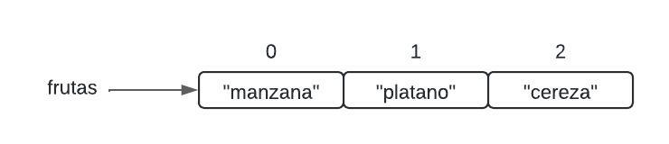
Cada elemento de la lista ocupa una posición, llamada índice, a la que podemos acceder contando desde el 0 hasta el número máximo de elementos – 1. En este caso, tenemos tres elementos, por lo que sus índices serán 0, 1 y 2.
Las listas en Python se definen utilizando corchetes [] y los elementos se separan por comas.
\# Crear una lista
frutas = \["manzana", "platano", "cereza"\]
# Acceder a elementos de la lista
print(frutas\[0\]) # Salida: manzana
print(frutas\[1\]) # Salida: banana
# Modificar un elemento de la lista
frutas\[1\] = "kiwi"
print(frutas) # Salida: \['manzana', 'kiwi', 'cereza'\]
También disponemos de muchas funciones integradas en el lenguaje, que nos permiten realizar operaciones comunes con las listas.
\# Agregar elementos
frutas.append("naranja")
print(frutas) # Salida: \['manzana', 'kiwi', 'cereza', 'naranja'\]
# Eliminar elementos
frutas.remove("kiwi")
print(frutas) # Salida: \['manzana', 'cereza', 'naranja'\]
# Insertar elementos en una posición específica
frutas.insert(1, "pera")
print(frutas) # Salida: \['manzana', 'pera', 'cereza', 'naranja'\]
# Obtener la longitud de la lista
longitud = len(frutas)
print(longitud) # Salida: 4
Por último, necesitamos saber cómo podemos recorrer una lista para poder realizar comprobaciones u operaciones sobre cada uno de los elementos que contiene.
\# Definir una lista
frutas = \["manzana", "pera", "cereza"\]
# Recorrer la lista con un bucle for
for fruta in frutas:
print(fruta)
En este ejemplo, el bucle for itera sobre cada elemento de la lista frutas, asignando cada elemento a la variable fruta en cada iteración, y luego imprime el valor de fruta.
Esto mismo también puede hacerse recorriendo la lista por medio de un índice que indica la posición que ocupa cada elemento en la lista:
\# Definir una lista
frutas = \["manzana", "pera", "cereza"\]
# Recorrer la lista con un bucle for
for indice in range(0,len(frutas)):
print(frutas\[indice\])
Actividades¶
📝 AA4.15 Estructuras de control¶
(C.ESP1 / CE1.2 / IC1-3p)
-
Sumar todos los elementos de una lista de números
Escribe un programa que defina una lista de números y calcule la suma de todos los elementos de la lista.
Solución
# Definir una lista de números numeros = [3, 5, 7, 9, 11] # Inicializar la suma suma_total = 0 # Recorrer la lista y sumar los elementos for numero in numeros: suma_total += numero # Mostrar el resultado print(f"La suma de todos los números es: {suma_total}")Primero definimos una lista de números. Luego inicializamos la variable suma_total en cero. Usamos un bucle for para recorrer la lista y sumar cada elemento. Finalmente, mostramos el resultado con print().
-
Encontrar el número más grande en una lista
Escribe un programa que defina una lista de números y encuentre el número más grande de la lista.
Solución
# Definir una lista de números numeros = [23, 56, 12, 89, 4] # Inicializar el número mayor mayor = numeros[0] # Recorrer la lista for numero in numeros: if numero > mayor: mayor = numero # Mostrar el número mayor print(f"El número mayor es: {mayor}")Asignamos el primer elemento como valor inicial del mayor y lo comparamos con el resto usando un bucle for.
-
Reemplazar números negativos por 0
Escribe un programa que defina una lista de números y reemplace los negativos por 0.
Solución
# Definir una lista con números positivos y negativos numeros = [10, -5, 3, -7, 0, 8] # Reemplazar los negativos por 0 for i in range(len(numeros)): if numeros[i] < 0: numeros[i] = 0 # Mostrar la lista modificada print(f"Lista después de reemplazar negativos: {numeros}")Recorremos la lista usando índices y sustituimos los valores negativos por 0.
-
Contar cuántas veces aparece un número en una lista
Escribe un programa que pida un número al usuario y cuente cuántas veces aparece en una lista.
Solución
# Definir una lista de números numeros = [4, 2, 7, 4, 9, 4, 1, 4] # Pedir un número al usuario numero = int(input("Introduce un número: ")) # Contar apariciones contador = numeros.count(numero) # Mostrar el resultado print(f"El número {numero} aparece {contador} veces en la lista.")Usamos el método
.count()para contar cuántas veces aparece el número. -
Eliminar elementos repetidos de una lista
Escribe un programa que elimine los elementos duplicados de una lista.
Solución
# Definir una lista con números repetidos numeros = [1, 2, 2, 3, 4, 4, 5, 6, 6] # Crear una nueva lista sin duplicados numeros_sin_repetidos = [] # Recorrer la lista original for numero in numeros: if numero not in numeros_sin_repetidos: numeros_sin_repetidos.append(numero) # Mostrar el resultado print(f"Lista sin repetidos: {numeros_sin_repetidos}")Se crea una nueva lista y solo se añaden los elementos que aún no existen en ella.
-
Invertir una lista
Escribe un programa que invierta el orden de una lista.
Solución
# Definir una lista de números numeros = [1, 2, 3, 4, 5] # Invertir la lista numeros_invertidos = numeros[::-1] # Mostrar la lista invertida print(f"Lista invertida: {numeros_invertidos}")Usamos
slicingpara recorrer la lista desde el final al principio. -
Ordenar una lista de menor a mayor (sin
sort())Escribe un programa que ordene una lista sin usar funciones predefinidas.
Solución
# Definir una lista de números numeros = [5, 2, 9, 1, 7] # Algoritmo de la burbuja for i in range(len(numeros)): for j in range(0, len(numeros) - i - 1): if numeros[j] > numeros[j + 1]: numeros[j], numeros[j + 1] = numeros[j + 1], numeros[j] # Mostrar la lista ordenada print(f"Lista ordenada: {numeros}")El algoritmo de la burbuja intercambia elementos adyacentes si están desordenados.
-
Combinar dos listas
Escribe un programa que combine dos listas en una sola.
Solución
# Definir dos listas lista1 = [1, 3, 5] lista2 = [2, 4, 6] # Combinar las listas lista_combinada = lista1 + lista2 # Mostrar el resultado print(f"Lista combinada: {lista_combinada}")El operador + concatena ambas listas.
-
Verificar si una lista está vacía
Escribe un programa que determine si una lista está vacía.
Solución
# Definir una lista lista = [] # Verificar si está vacía if len(lista) == 0: print("La lista está vacía.") else: print("La lista no está vacía.")Usamos
len()para comprobar si la lista tiene elementos. -
Crear una lista con los cuadrados del 1 al 10
Escribe un programa que cree una lista con los cuadrados del 1 al 10.
Solución
# Crear una lista vacía cuadrados = [] # Calcular los cuadrados for numero in range(1, 11): cuadrados.append(numero ** 2) # Mostrar la lista print(f"Los cuadrados son: {cuadrados}")Calculamos el cuadrado de cada número y lo añadimos a la lista.
-
Contar vocales en una lista de caracteres
Escribe un programa que cuente cuántas vocales hay en una lista.
Solución
# Definir una lista de caracteres caracteres = ['a', 'b', 'c', 'e', 'i', 'o', 'u', 'x', 'z'] # Lista de vocales vocales = ['a', 'e', 'i', 'o', 'u'] # Contador contador_vocales = 0 # Contar vocales for caracter in caracteres: if caracter in vocales: contador_vocales += 1 # Mostrar el resultado print(f"Hay {contador_vocales} vocales en la lista.")Se compara cada carácter con una lista de vocales.
-
Concatenar palabras de una lista
Escribe un programa que una todas las palabras de una lista en una sola cadena.
Solución
# Definir una lista de palabras palabras = ["Hola", "mundo", "esto", "es", "Python"] # Cadena vacía cadena_concatenada = "" # Concatenar palabras for palabra in palabras: cadena_concatenada += palabra + " " # Eliminar espacio final cadena_concatenada = cadena_concatenada.strip() # Mostrar el resultado print(f"Cadena resultante: {cadena_concatenada}")Se van uniendo las palabras y luego se elimina el espacio sobrante.
-
Convertir una lista de caracteres en una palabra
Escribe un programa que convierta una lista de caracteres en una cadena.
Solución
# Definir una lista de caracteres letras = ['P', 'y', 't', 'h', 'o', 'n'] # Convertir en cadena palabra = ''.join(letras) # Mostrar la palabra print(f"La palabra formada es: {palabra}")El método
join()une todos los caracteres en una sola cadena.
💡 AAP4.16 Ampliación Diccionarios¶
(C.ESP1 / CE1.2 / IC1-3p)
Los diccionarios son colecciones desordenadas de pares clave-valor. Cada clave debe ser única, y se utiliza para acceder al valor asociado. Los diccionarios se definen utilizando llaves {} y pares clave-valor separados por dos puntos :.
Por ejemplo vamos a crear un diccionario persona que almacene los datos personales:
\# Crear un diccionario
persona = {
"nombre": "Juan",
"edad": 30,
"ciudad": "Madrid"
}
# Acceder a valores por clave
print(persona\["nombre"\]) # Salida: Juan
print(persona\["edad"\]) # Salida: 30
# Modificar un valor
persona\["edad"\] = 31
print(persona) # Salida: {'nombre': 'Juan', 'edad': 31, 'ciudad': 'Madrid'}
# Agregar un nuevo par clave-valor
persona\["profesion"\] = "Ingeniero"
print(persona) # Salida: {'nombre': 'Juan', 'edad': 31, 'ciudad': 'Madrid', 'profesion': 'Ingeniero'}
# Eliminar un par clave-valor
del persona\["ciudad"\]
print(persona) # Salida: {'nombre': 'Juan', 'edad': 31, 'profesion': 'Ingeniero'}
De la misma manera que hicimos para las listas, también podemos recorrer los diccionarios. Recorrer un diccionario implica iterar sobre sus pares clave-valor. En Python, esto se puede hacer utilizando el método items(), que devuelve una vista de pares clave-valor del diccionario.
\# Definir un diccionario
persona = {
"nombre": "Juan",
"edad": 30,
"ciudad": "Madrid"
}
# Recorrer el diccionario con un bucle for
for clave, valor in persona.items():
print(f"{clave}: {valor}")
En este ejemplo, el método items() se utiliza para obtener una vista de pares clave-valor del diccionario persona. El bucle for itera sobre cada par, asignando la clave a clave y el valor a valor, y luego imprime ambos.
Pero puede que necesitemos recorrer sólo claves o sólo valores. Para esos casos también disponemos de métodos que agilizan estos procesos:
\# Recorrer solo las claves del diccionario
for clave in persona.keys():
print(clave)
# Recorrer solo los valores del diccionario
for valor in persona.values():
print(valor)
En el primer ejemplo, el método keys() se utiliza para obtener una vista de las claves del diccionario persona. En el segundo ejemplo, el método values() se utiliza para obtener una vista de los valores del diccionario persona.
A continuación, realiza los siguientes ejercicios:
-
Agregar estudiantes y sus calificaciones a un diccionario
Crea un programa que permita agregar nombres de estudiantes como claves y sus calificaciones como valores en un diccionario. Luego, imprime el diccionario.
Solución
# Crear un diccionario vacío calificaciones = {} # Pedir el número de estudiantes num_estudiantes = int(input("¿Cuántos estudiantes quieres agregar?: ")) # Agregar estudiantes y calificaciones al diccionario for i in range(num_estudiantes): nombre = input(f"Introduce el nombre del estudiante {i + 1}: ") calificacion = int(input(f"Introduce la calificación de {nombre}: ")) calificaciones[nombre] = calificacion # Mostrar el diccionario con las calificaciones print("Diccionario de estudiantes y calificaciones:", calificaciones)Primero se crea un diccionario vacío. Luego se pide al usuario el número de estudiantes. En un bucle, se añaden los nombres y calificaciones al diccionario. Finalmente, se muestra el diccionario completo.
-
Buscar un valor en un diccionario
Escribe un programa que permita al usuario buscar una clave en un diccionario de frutas y colores.
Solución
# Definir un diccionario de frutas y colores frutas_colores = { "manzana": "rojo", "platano": "amarillo", "pera": "verde", "naranja": "naranja" } # Pedir al usuario una fruta fruta = input("Introduce el nombre de una fruta: ") # Verificar si la fruta está en el diccionario if fruta in frutas_colores: print(f"El color de la {fruta} es: {frutas_colores[fruta]}") else: print("Esa fruta no está en el diccionario.")Se comprueba si la clave introducida existe en el diccionario y se muestra su valor si está presente.
-
Actualizar los precios de productos en un diccionario
Escribe un programa que permita actualizar el precio de un producto en un diccionario. Si el producto no existe, se añade.
Solución
# Definir un diccionario de productos y precios productos = { "pan": 1.20, "leche": 0.99, "huevos": 2.50 } # Pedir el producto y el nuevo precio producto = input("Introduce el nombre del producto: ") precio = float(input(f"Introduce el nuevo precio de {producto}: ")) # Actualizar el precio o agregar el producto productos[producto] = precio # Mostrar el diccionario actualizado print("Diccionario de productos y precios actualizado:", productos)Se asigna un valor a una clave para actualizarla o crearla si no existe.
-
Eliminar claves con valores negativos en un diccionario
Escribe un programa que elimine las claves de un diccionario que tienen valores negativos.
Solución
# Definir un diccionario con números enteros numeros = { "a": 5, "b": -3, "c": 8, "d": -1 } # Crear una lista de claves a eliminar claves_a_eliminar = [clave for clave, valor in numeros.items() if valor < 0] # Eliminar las claves con valores negativos for clave in claves_a_eliminar: del numeros[clave] # Mostrar el diccionario actualizado print("Diccionario sin valores negativos:", numeros)Primero se identifican las claves con valores negativos y después se eliminan.
-
Contar la frecuencia de letras en una palabra
Escribe un programa que cuente cuántas veces aparece cada letra en una palabra dada por el usuario.
Solución
# Pedir una palabra al usuario palabra = input("Introduce una palabra: ") # Crear un diccionario para la frecuencia de letras frecuencia_letras = {} # Contar la frecuencia de cada letra for letra in palabra: if letra in frecuencia_letras: frecuencia_letras[letra] += 1 else: frecuencia_letras[letra] = 1 # Mostrar el diccionario con la frecuencia print("Frecuencia de letras:", frecuencia_letras)Cada letra se usa como clave y su número de apariciones como valor.
-
Intercambiar claves y valores de un diccionario
Escribe un programa que intercambie las claves y los valores de un diccionario.
Solución
# Definir un diccionario diccionario = { "nombre": "Juan", "edad": 30, "ciudad": "Madrid" } # Intercambiar claves y valores diccionario_invertido = {valor: clave for clave, valor in diccionario.items()} # Mostrar el diccionario invertido print(f"Diccionario invertido: {diccionario_invertido}")Se utiliza una comprensión de diccionario junto con
items()para invertir claves y valores. -
Crear un diccionario a partir de dos listas
Escribe un programa que cree un diccionario usando una lista de claves y otra de valores.
Solución
# Definir listas claves = ["nombre", "edad", "ciudad"] valores = ["Ana", 28, "Barcelona"] # Crear el diccionario diccionario = {} for i in range(len(claves)): diccionario[claves[i]] = valores[i] # Mostrar el diccionario print(f"Diccionario creado: {diccionario}")Se recorren ambas listas usando índices para crear los pares clave-valor.
-
Sumar los valores numéricos de un diccionario
Escribe un programa que sume todos los valores numéricos de un diccionario.
Solución
# Definir un diccionario con valores numéricos diccionario = { "a": 5, "b": 12, "c": 3, "d": 7 } # Inicializar la suma suma_total = 0 # Sumar los valores for valor in diccionario.values(): suma_total += valor # Mostrar el resultado print(f"La suma de los valores es: {suma_total}")Se recorren los valores del diccionario con
values()y se van sumando. -
Encontrar la clave con el valor más alto
Escribe un programa que encuentre la clave asociada al valor más alto en un diccionario.
Solución
# Definir un diccionario diccionario = { "a": 10, "b": 25, "c": 3, "d": 18 } # Inicializar variables clave_mayor_valor = None mayor_valor = None # Buscar el mayor valor for clave, valor in diccionario.items(): if mayor_valor is None or valor > mayor_valor: mayor_valor = valor clave_mayor_valor = clave # Mostrar el resultado print(f"La clave con el valor más alto es: {clave_mayor_valor}")Se compara cada valor para determinar el mayor.
-
Combinar dos diccionarios
Escribe un programa que combine dos diccionarios. Si una clave se repite, se sobrescribe.
Solución
# Definir diccionarios diccionario1 = {"a": 1, "b": 2, "c": 3} diccionario2 = {"b": 4, "d": 5} # Combinar diccionarios for clave, valor in diccionario2.items(): diccionario1[clave] = valor # Mostrar el diccionario combinado print(f"Diccionario combinado: {diccionario1}")El segundo diccionario sobrescribe las claves repetidas.
🔨 AA4.17 Refuerzo Estructura de datos Listas y Diccionarios¶
(C.ESP1 / CE1.2 / IC1-3p)
-
Escribe un programa que calcule la suma de todos los elementos de esta lista [4, 12, 15, 9, 31].
Solución
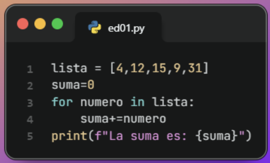
-
Escribe un programa que encuentre el mayor número de esta lista [4, 12, 65, 9, 31].
Solución
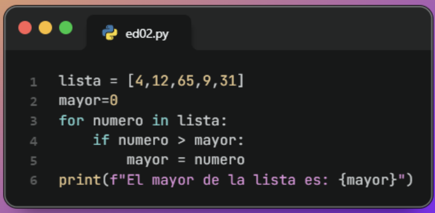
-
Escribe un programa que calcule cuántos elementos hay en esta lista [4, 12, 15, 9, 31].
Solución
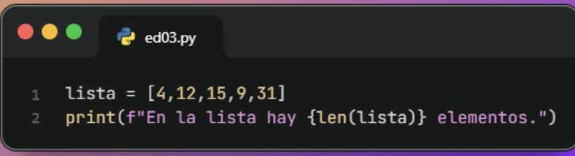
-
Escribe un programa que muestre solo los número impares de esta lista [4, 12, 15, 9, 31].
Solución
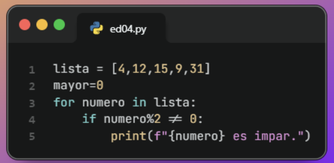
-
Escribe un programa que muestre esta lista invertida [4, 12, 15, 9, 31].
Solución
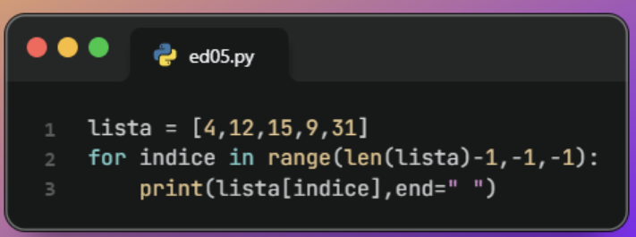
-
Escribe un programa que cree un diccionario con el nombre, la edad y la ciudad de una persona, obteniendo estos datos del usuario por teclado, y luego muestre el diccionario..
Solución
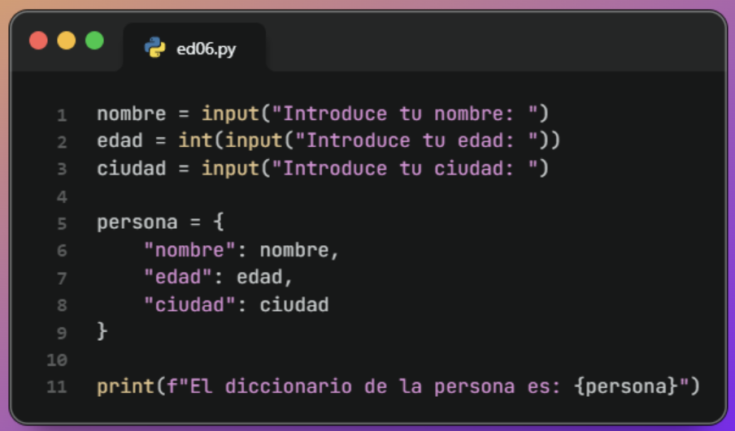
-
Amplía el ejercicio anterior para que se le pida al usuario una nueva edad, modifique la edad que tenía la persona y muestre nuevamente el diccionario actualizado.
Solución
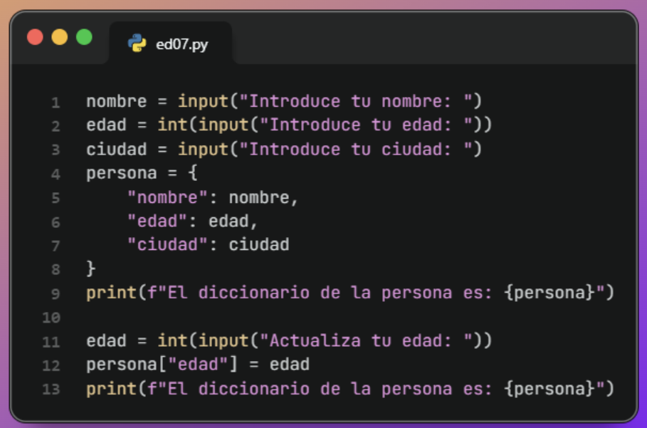
-
Amplía el ejercicio anterior para que añada al diccionario de la persona su dirección de correo electrónico, y muestre el diccionario actualizado.
Solución
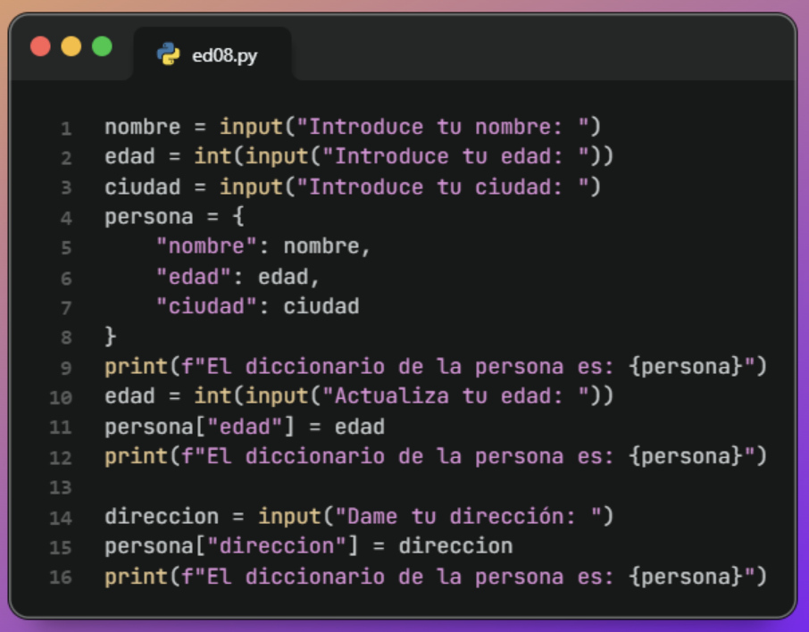
-
Amplía el ejercicio anterior para que se le pida al usuario una clave y elimine ese par clave-valor del diccionario persona. Muestra el diccionario actualizado.
Solución
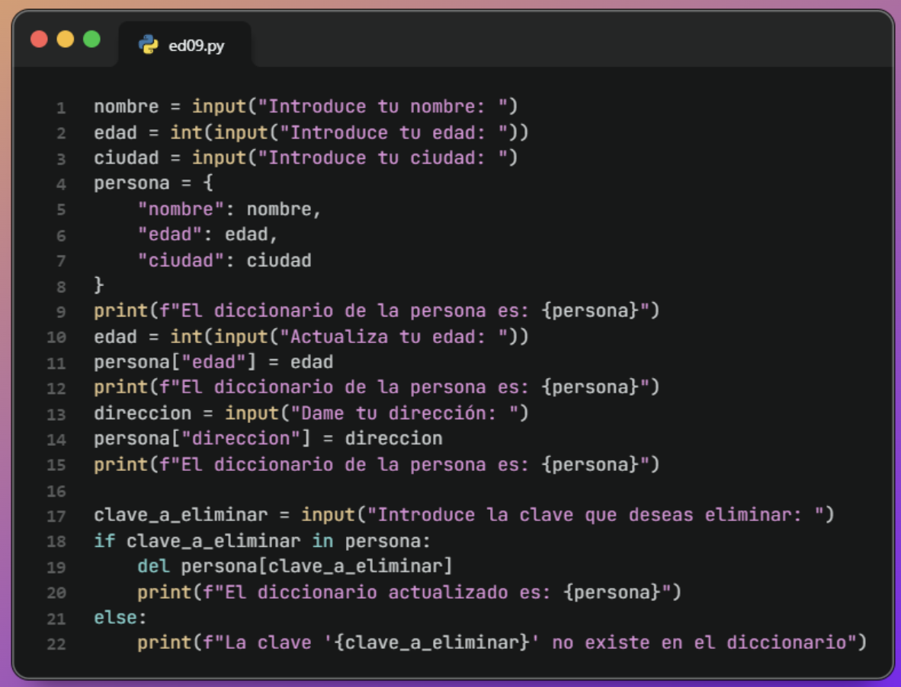
-
Amplía el ejercicio anterior para mostrar en pantalla sólo los valores del diccionario.
Solución
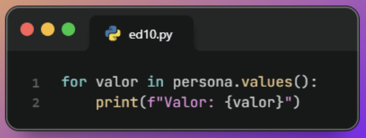